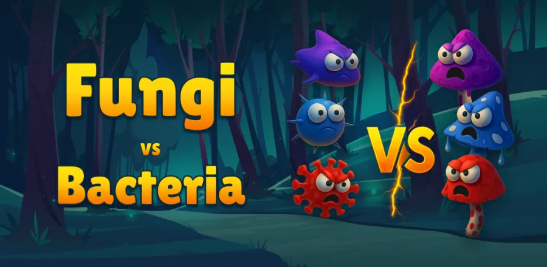

Privacy Policy: Fungi vs Bacteria

Welcome to Fungi vs Bacteria! Your privacy is important to us. This Privacy Policy explains what information is collected, how it is used, and what choices you have when you play Fungi vs Bacteria, a tower defense game for iOS and Android that is supported by advertising and offers optional in-app purchases. Please read this policy carefully. If you do not agree with it, please do not use the game.
Information We Collect
Personal Data: We do not collect personal data from you directly. Fungi vs Bacteria does not require an account, a login, or any registration, and we do not ask you for your name, email address, or other contact details in order to play. If you choose to contact us by email, we will use your email address and the information you provide solely to respond to your inquiry.
Game Progress: Your level progress, unlocked towers and upgrades, settings, and coin balance are stored locally on your device. This data is not transmitted to servers operated by us. If you uninstall the game, locally stored progress is permanently removed from your device.
Automatically Collected Information: Our third-party service providers may automatically collect certain information when you play, including:
- Device data (device type, model, operating system, language, and device identifiers)
- Advertising ID (for advertising and frequency capping)
- IP address and approximate, non-precise location
- Ad interaction data (ad impressions, clicks, and rewarded ad completions)
- Gameplay and performance data (sessions, levels reached, crash and error reports)
Payment Information: Fungi vs Bacteria does not collect or process credit or debit card details. All in-app purchases are processed by Apple (on iOS) and Google (on Android) through their own payment systems. We may receive limited transaction information such as the product identifier, a purchase confirmation, and a transaction receipt used to validate and restore purchases, but we never receive your payment card details or billing address.
How We Use Information
- To run and maintain the game and its features, including level progression, rewarded ads, and your coin balance.
- To display advertisements and measure their performance.
- To process and validate in-app purchases and to restore purchases you have already made.
- To analyze gameplay and difficulty balance so we can improve the game.
- To detect, prevent, and investigate fraud and abuse.
- To diagnose crashes and technical issues and improve stability.
- To respond to your support requests.
Advertising
Fungi vs Bacteria is supported by advertising, including banner, interstitial, and optional rewarded ads that grant in-game coins. We use Unity Ads to serve these ads. Unity collects and processes data according to its Privacy Policy. Watching a rewarded ad is always optional; you can earn coins through normal gameplay as well.
Your advertising choices: On iOS, the game asks for your permission through Apple's App Tracking Transparency prompt before any tracking for personalized advertising takes place, and you can change your choice at any time under Settings > Privacy & Security > Tracking. On Android, you can reset or delete your advertising ID and opt out of ads personalization in your device settings. If you are in the European Economic Area, the United Kingdom, or Switzerland, you will be shown a consent request the first time you play, and you can change or withdraw your consent at any time from the privacy settings inside the game. If you decline personalized ads, you will still see ads, but they will be non-personalized.
In-App Purchases and Virtual Coins
Fungi vs Bacteria offers optional in-app purchases of coin packs and an ad-free option. Purchases are entirely voluntary and are handled by the App Store or Google Play using the payment method stored in your store account. Prices are shown in the store before you confirm a purchase.
Coins are a virtual in-game currency. They have no monetary value, cannot be exchanged for cash or transferred to another person or device, and are not redeemable outside the game. Coins and other purchased items are tied to the device and store account used for the purchase, and unused coins are lost if you delete the game without a store-backed restore being available.
Refunds are handled exclusively by Apple and Google under their own policies; we cannot issue refunds directly. If a purchase does not appear in the game, please contact us and we will try to help you restore it.
If you want to prevent accidental purchases, particularly on a device used by children, you can disable or password-protect in-app purchases using Screen Time on iOS or parental controls in Google Play on Android.
Analytics
We use analytics provided through the Unity platform to understand how the game is played, such as how far players progress, which levels are too difficult, and how often crashes occur. This data is collected at the device level and is not used by us to identify you personally.
Data Security
We take reasonable administrative and technical measures to protect the information processed through the game and by our third-party providers. However, no method of transmission or storage is completely secure, and we cannot guarantee absolute security.
Children's Privacy
Fungi vs Bacteria is intended for a general audience and is not directed at children under the age of 13. We do not knowingly collect personal information from children under 13. Where a player is identified as a child, or where required by law, ads are served in non-personalized form only. If you believe a child has provided personal information, please contact us at fungivsbacteria@oktayshakirov.com and we will take steps to delete it.
Your Privacy Rights
Depending on where you live, you may have the right to access, correct, or delete personal information, to object to or restrict its processing, and to withdraw consent. Because game data is stored locally, you can delete it at any time by uninstalling the game or resetting your progress in the settings. For data held by Unity, you can submit a request through their Privacy Policy page or by emailing dpo@unity3d.com. For anything else, contact us at the address below.
Data Retention
We retain the limited information we receive for as long as it is needed to provide the game, validate purchases, comply with legal and tax obligations, and resolve disputes. Data collected by our third-party providers is retained according to their own retention policies.
International Data Transfers
Your information may be transferred to and processed in countries other than your country of residence, including the United States. These countries may have data protection laws that differ from those in your country. By using the game, you consent to such transfers.
Changes to This Policy
We may update this Privacy Policy from time to time to reflect changes in the game or in legal requirements. The updated policy will be posted on this page with a new "Effective Date." Your continued use of the game after a change indicates your acceptance of the updated policy.
Contact Us
If you have any questions or concerns about this Privacy Policy, please contact us via email at fungivsbacteria@oktayshakirov.com
Effective Date: 27.09.2026